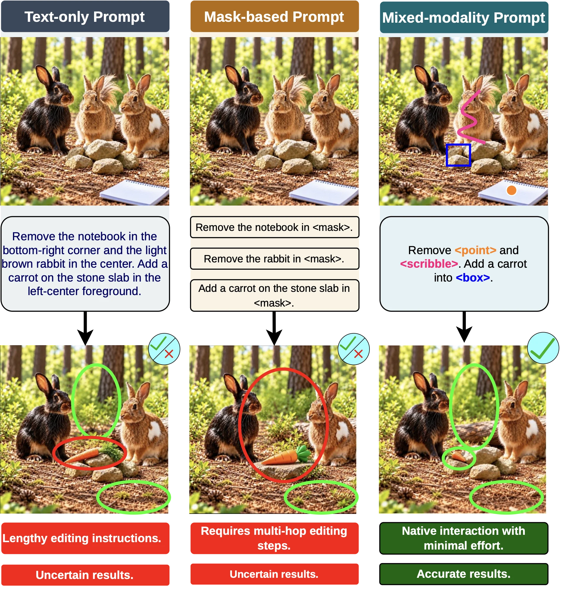
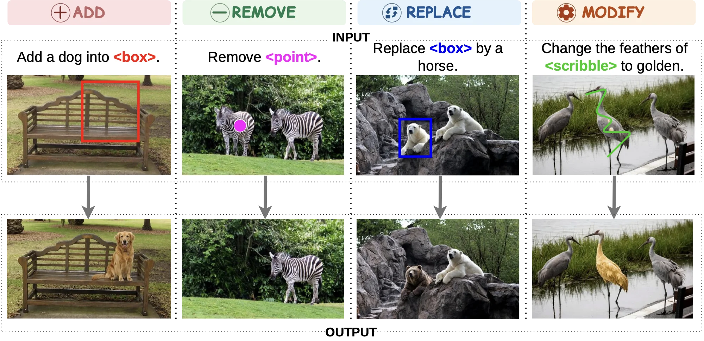
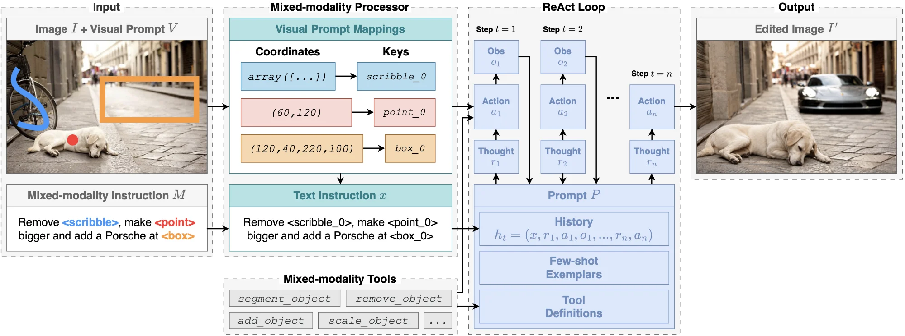
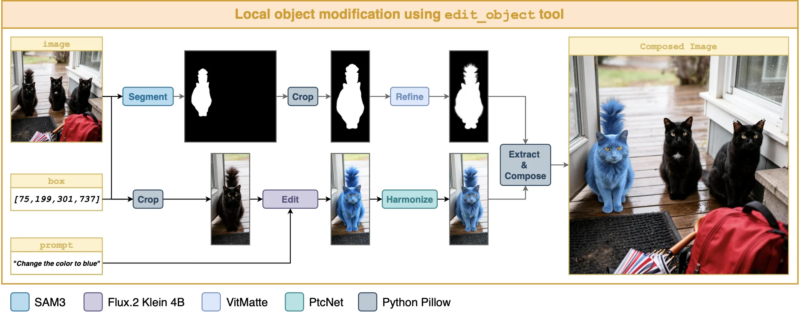
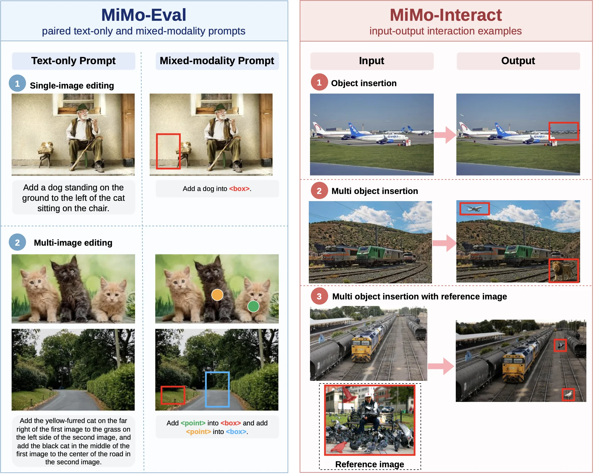
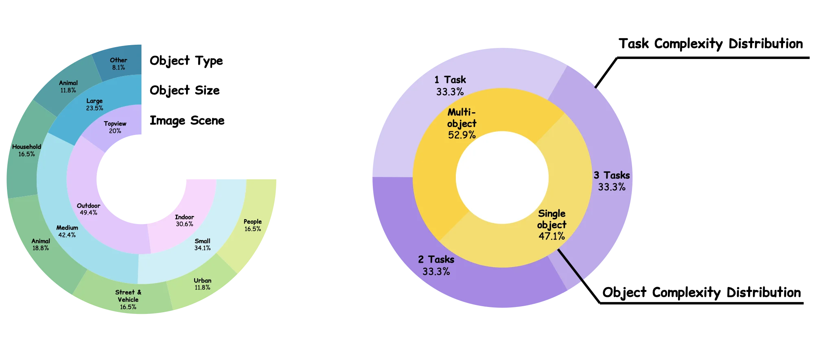
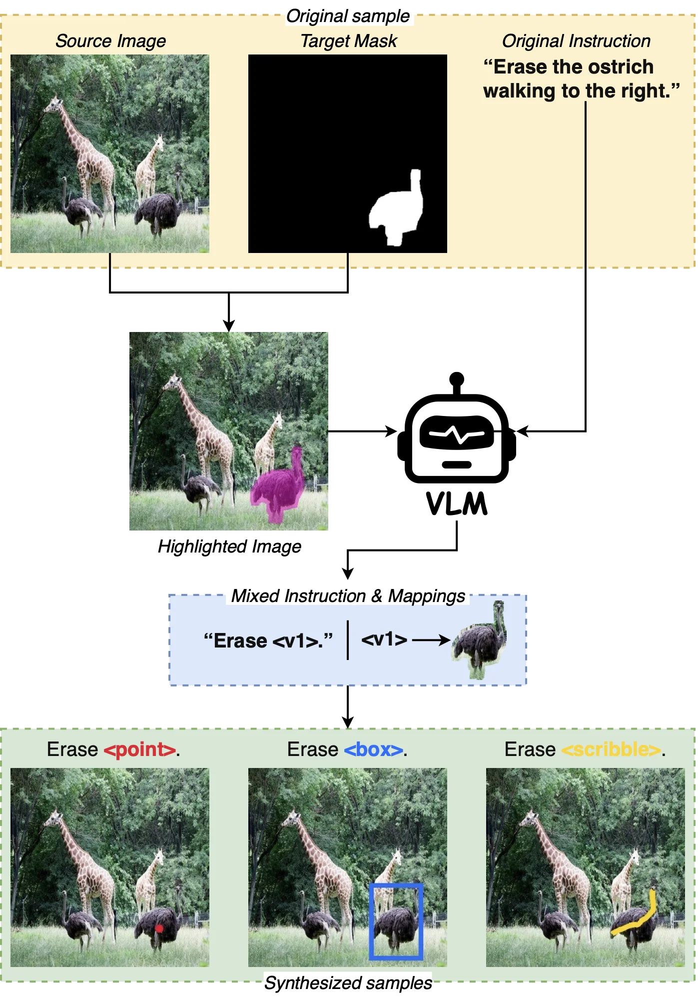
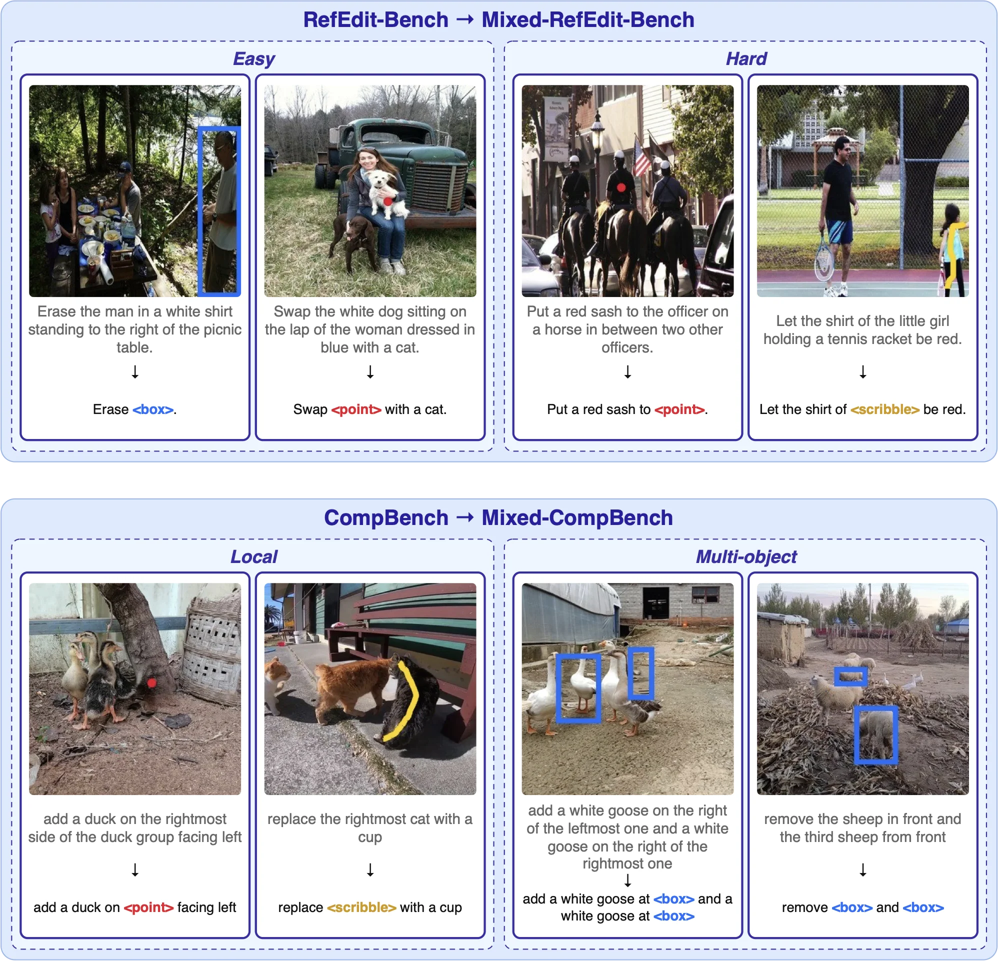
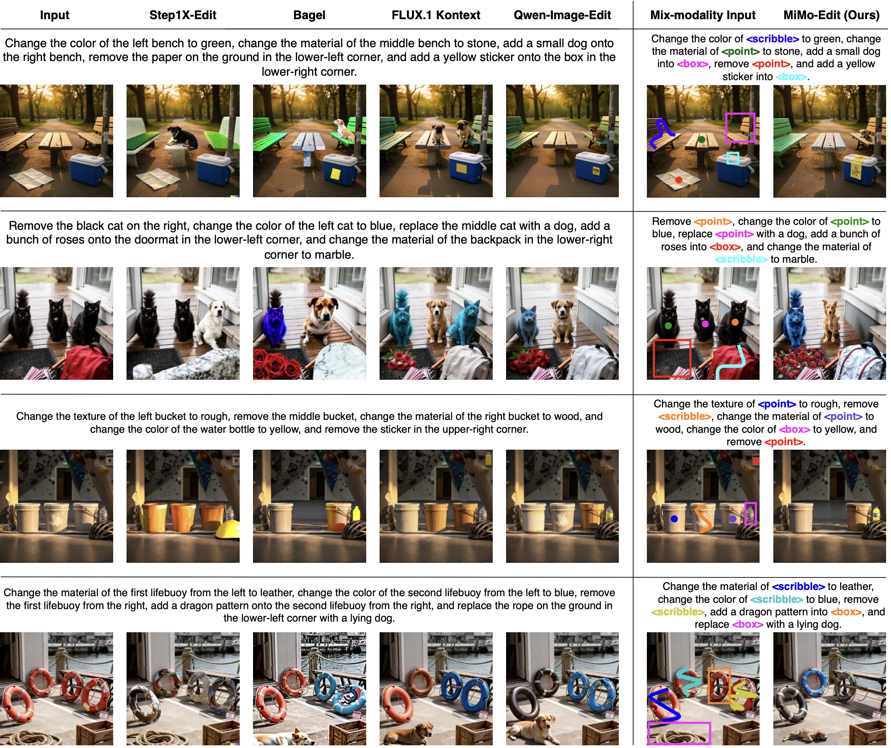
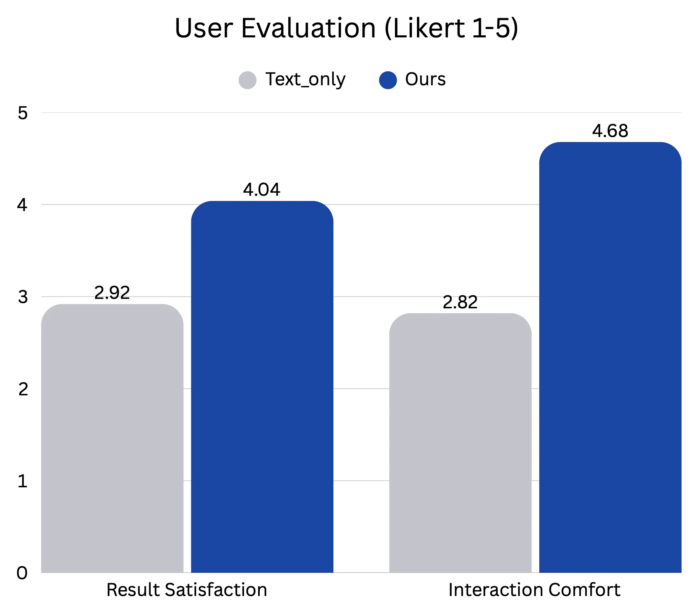

Instruction-based image editing has advanced rapidly with the emergence of large vision-language models (LVLMs). However, accurately expressing editing intentions remains challenging, particularly in complex scenes containing multiple similar objects. Text-only prompts often require lengthy spatial descriptions to identify editing targets, while mask-based approaches demand precise manual annotations.
To address these limitations, we introduce Mixed-Edit, a mixed-modality prompting paradigm for compositional image editing that enables users to express editing intentions by naturally combining textual instructions with visual references, including points, bounding boxes, and scribbles. Unlike conventional approaches that primarily use visual prompts as spatial constraints, our paradigm treats them as explicit, referable visual entities that can be directly associated with editing operations within a unified instruction.
We develop a framework that transforms heterogeneous visual references into structured symbolic representations, employs LLM-based reasoning to generate executable editing programs, and integrates modular editing tools for controllable and compositional image manipulation. We further construct mixed-modality benchmark extensions and conduct comprehensive evaluations, including human studies and quantitative experiments. Experimental results demonstrate roughly threefold faster prompt formulation, improved editing-intention fidelity, particularly in challenging referential scenarios, and higher user satisfaction compared with text-only approaches.

The architecture has three components: (1) Mixed-Modality Input, (2) Mixed-Modality Processor, and
(3) Reasoning and Execution Loop. Visual prompts are mapped to symbolic identifiers such as
point_0, box_0, or scribble_0. The LLM plans over the unified
textual instruction without receiving raw images, coordinates, or masks, while the execution engine
resolves each reference to its region when a tool is invoked.


edit_object tool. A user-specified visual reference
is resolved to the target object, which is segmented and cropped for localized editing. The result is refined,
harmonized, and composited back into the original image. The implementation combines SAM 3, FLUX.2 Klein 4B,
VitMatte, PtcNet, and Python Pillow.
We evaluate on four datasets: two human-evaluation datasets, Mixed-Eval (50 images, 30 instructions) and Mixed-Interact (60 images, 45 tasks), and two mixed-modality extensions of existing benchmarks, Mixed-RefEdit (200 instructions, from RefEdit) and Mixed-CompBench (2609 instructions, from CompBench). Each instruction has paired text-only and mixed-modality forms.




Ours--Mixed outperforms Ours--Text on all three metrics in both difficulty categories. On Hard cases, semantic consistency ($SC_{\mathrm{avg}}$) rises from 6.92 to 7.77, and the drop from Easy to Hard shrinks from 0.93 to 0.10 points.
| Method | Easy | Hard | ΔSCavg | ||||
|---|---|---|---|---|---|---|---|
| SCavg ↑ | PQavg ↑ | Oavg ↑ | SCavg ↑ | PQavg ↑ | Oavg ↑ | ||
| InstructPix2Pix | 3.52 | 5.66 | 2.82 | 3.80 | 6.02 | 3.22 | 0.28 |
| MagicBrush | 4.18 | 6.10 | 3.67 | 4.11 | 6.16 | 3.56 | -0.07 |
| UltraEdit | 3.68 | 6.98 | 3.40 | 2.93 | 6.23 | 2.59 | -0.75 |
| HIVE | 3.15 | 5.26 | 2.42 | 3.22 | 5.52 | 2.47 | 0.07 |
| HQ-Edit | 2.58 | 5.39 | 2.37 | 2.95 | 5.21 | 2.60 | 0.37 |
| CosXLEdit | 3.20 | 6.73 | 2.88 | 3.44 | 6.65 | 2.88 | 0.24 |
| PnP | 4.25 | 5.59 | 3.55 | 2.45 | 5.62 | 2.27 | -1.80 |
| InstructDiffusion | 4.16 | 4.71 | 3.31 | 4.09 | 4.94 | 3.16 | -0.07 |
| OmniEdit | 4.18 | 6.15 | 3.68 | 4.07 | 6.28 | 3.53 | -0.11 |
| InstructDiffusion-HA | 5.01 | 5.88 | 4.21 | 4.56 | 6.10 | 3.75 | -0.45 |
| RefEdit | 5.47 | 5.85 | 4.68 | 4.51 | 6.48 | 3.93 | -0.96 |
| RefEdit-SD3 | 5.46 | 6.36 | 4.99 | 4.47 | 6.21 | 3.98 | -0.99 |
| Ours--Text | 7.85 | 4.36 | 5.36 | 6.92 | 4.39 | 4.73 | -0.93 |
| Ours--Mixed | 7.87 | 4.53 | 5.47 | 7.77 | 4.50 | 5.41 | -0.10 |
Compared with Ours--Text, Ours--Mixed improves Preference Fidelity (PF) from 8.12 to 9.16, Consistency from 8.71 to 9.11, Perceptual Quality (PQ) from 6.41 to 7.10, and Overall from 6.74 to 7.70 (a 14.2% relative gain). Local CLIP Text Score ($LC\text{-}T$) is slightly higher than Ours--Text but below FLUX.1 Kontext, which reflects a known limitation of CLIP-based similarity for multi-object edits.
| Method | LC-T ↑ | PF ↑ | Consistency ↑ | PQ ↑ | Overall ↑ |
|---|---|---|---|---|---|
| Step1X-Edit | 20.459 | 6.28 | 7.94 | 5.43 | 5.05 |
| BAGEL | 20.856 | 8.06 | 8.80 | 5.94 | 6.24 |
| FLUX.1 Kontext | 21.020 | 8.24 | 8.62 | 6.16 | 6.51 |
| Qwen-Image-Edit | 20.722 | 8.50 | 8.32 | 6.01 | 6.39 |
| Ours--Text | 20.050 | 8.12 | 8.71 | 6.41 | 6.74 |
| Ours--Mixed | 20.240 | 9.16 | 9.11 | 7.10 | 7.70 |

In the Mixed-Interact study, participants formulated equivalent editing intentions under text-only and mixed-modality conditions. Mixed-modality prompting reduced prompt formulation time by roughly threefold and received higher satisfaction ratings.

@misc{duongdinh2026mixededit,
title = {Mixed-Edit: Mixed-Modality Referencing for Compositional Image Editing},
author = {Duong Dinh, Phuong-Dao and Le, Tin-Nghia and Nguyen, Vinh-Tiep},
year = {2026},
note = {Preprint}
}